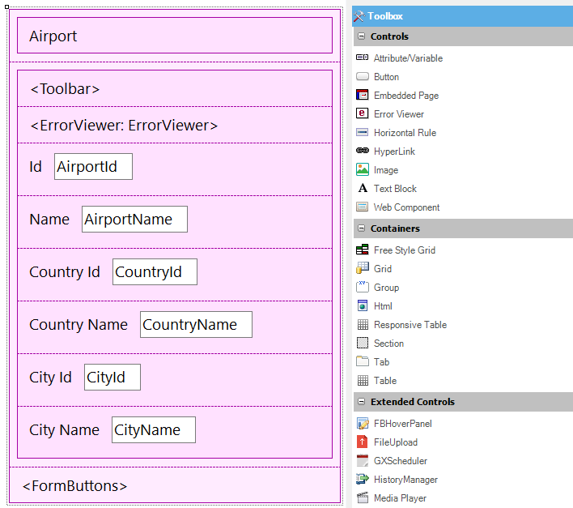
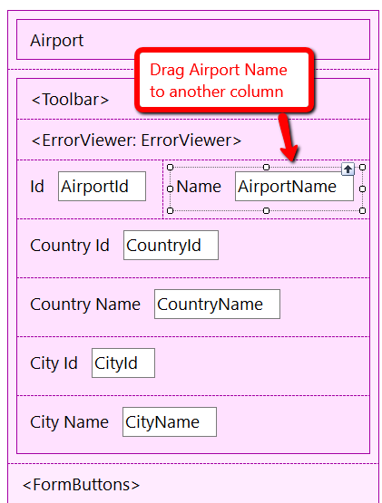
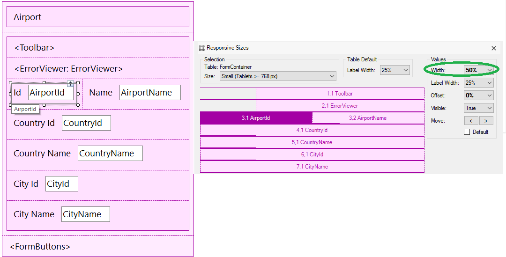
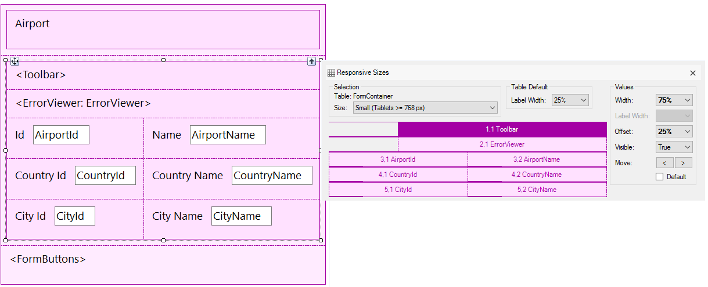
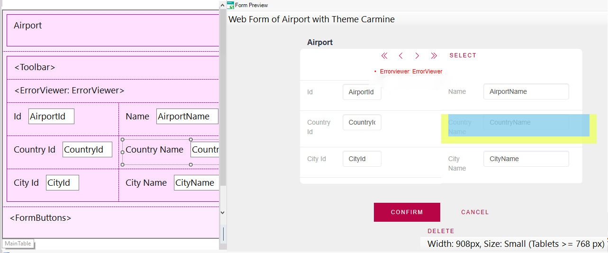
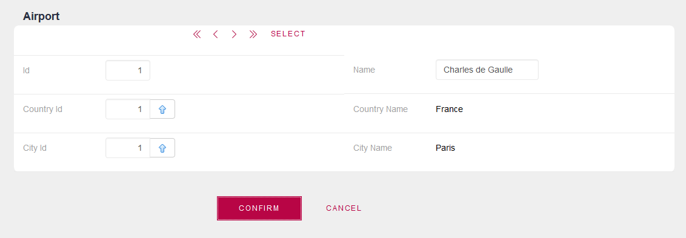

To achieve a Responsive Web Application and an optimal viewing experience, we must use the Web Abstract Editor.The main purpose of the Web Abstract editor is to assist in the design of Responsive Web Applications.
The control used in GeneXus to design a Responsive web application is called Responsive Table and it is the main control of the Abstract layout.
Frameworks like BootStrap provide a container that they call Grid. It is similar to a table but it adapts to the width of the screen in order to allow for a Responsive web design. Therefore, this container makes it possible to display the information in a way that is readable to the user regardless of the device or screen size.The GeneXus Responsive Table is generated as a Bootstrap fluid grid.
Unlike the traditional Table control, responsive tables allow working with percentage-based designs which guarantee that the elements inside them will always adapt to the device screen.
We can work with different Responsive tables in the abstract layout. This means that “n” responsive tables may be nested, all displayed in the same window of the editor.
The percentages are specified for four different screen sizes (according to the width of the screen).
- Extra small devices (xs) (Phone < 768px)
- Small devices (sm) (Tablets >= 768px)
- Medium devices (md) (Desktops >= 992px)
- Large devices (lg) (Desktops >= 1200px)
The Responsive Sizes property allows making this configuration for the different screens.
The purpose of this document is to explain the use of the Web Abstract Editor with a very simple example; that is: making a Responsive Web Design (RWD) for a Web Transaction form.
In the first place, we recommend you read Getting started with RWD: Understanding default forms.
The main purpose is to design the web transaction in a way adaptable to all screen sizes (on any device).
Suppose we have an Airport Transaction whose web form is set as default, and it looks like this:

Airport Web Transaction default form
In general, for small screens like phone screens, it's best to have the information in just one column (as if stacked). However, in the case of wider screens, as in tablets or desktop screens, the information may be displayed horizontally. Furthermore, in the case of tablets or desktop screens, it is possible to show additional information, while it is advisable to skip certain in the case of smaller screens.
To make a different design for each kind of screen in GeneXus we should use the Abstract Editor.
Suppose that in this example we want to change the distribution of controls for small-screen devices (tablets), so that, instead of all stacked in a column, controls are distributed among two columns.
1. Drag the elements to create another column.
To add a new column to the Responsive Table, you must drag and drop a control.

Adding a column to the layout
2. Right-click on the form and select the Responsive Sizes property. Select the Small (Tablets) value in the combo box, and click on the "Airport Id" cell. Then set the width = 50% using the combo box on the right. The AirportName takes the remaining 50% width.

Setting the column's width.
4. Continue configuring the remaining column settings for this screen size.

Final design for Airport transaction form for tablets.
When you change the position of the controls in the form, it may be necessary to adjust the layout settings such as the Responsive Sizes of the cells. It's very useful to use the Web Form Preview, to check the aspect of the form before hitting the F5 key.

5. After doing "Build With this only" for the Airport transaction, the execution on tablets will look like this:

Execution of the Airport transaction
Further reading: Arranging the layout in a RWA
Responsive Web Design in GeneXus
|